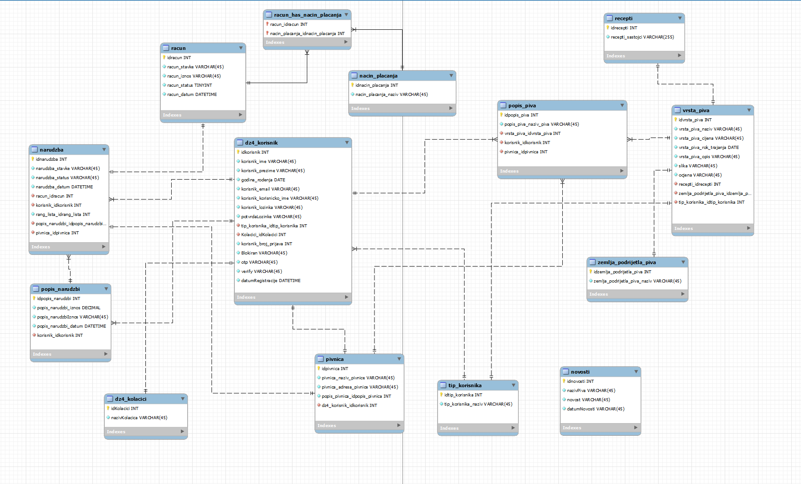

Dokumentacija
Opis projektnog zadatka
Za projektni zadatak iz kolegija Web dizajn i programiranje trebali izraditi web stranicu, te je tema moje grupe bila "Pivnica". Mi smo
u ovom projektu trebali napraviti web stranicu koja omogucava kreiranje piva, pivnica i drugih stvari te pregled tih podataka kao i
neke statisticke podatke. Stranica ima mogucnost prijave, registracije, te je vecina funkcionalnosti skrivena od neregistriranih korisnika.
Od uloga imamo neregistriranog korisnika, registriranog korisnika, moderatora i administratora.
Neregistrirani korisnik moze vidjeti pocetnu index stranicu, stranicu prijave i stranicu registracije. Na pocetnoj stranici
neregistrirani korisnik ce moci galeriju slika piva u odabranoj pivnici uz mogucnost sortiranja po zemlji podrijekla ili cijeni,
te moze filtrirati po cijeni. Korisnik ce takoder moci vidjeti rang listu broja narucenih piva u odredenom vremenskom periodu.
Registrirani korisnik moze pregledavati i kreirati narudzbe, kao i placati ih djelomicno ili u potpunosti. Takoder moze vidjeti popis piva
koje je narucio te im dati ocjenu, te moze vidjeti vlastitu statistiku broja narucenih piva. Moderator ce pomoci pregledavati kreirati i
azurirati pive i popis piva kao i vidjeti statistiku narucenih piva grupiranih po zemlji podrijetla. Administrator moze pregledavati, kreirati
i azurirati pivnice i zemlje podrijetla kao i blokirati korisnike i vidjeti statistiku rada sustava.
ERA model

Popis i opis skripata
- emailaktivacija.php - aktivacija emaila nakon registracije
- prijava.php - Stranica preko koje se korisnik prijavljuje i time se odreduje njegova uloga te sadrzi ajax provjeru inputa
- odjava.php - sluzi za odjavu korisnika
- registracija.php - sluzi za registraciju korisnike te sadrzi ajax provjeru inputa
- era.php - era dijagram programskog rjesenja
- index.php - pocetna stranica na kojoj se nalaze slike piva koje se mogu sortirati po drzavi i ocjenu
- kosarica.php - sluzi za prikaz stavki koje je korisnik narucio
- narudzba.php - sluzi kako bi korisnik mogao naruciti neke od mogucih piva
- navigacijski.php - navigacijski dijagram programskog rjesenja
- o_autoru.html - osnovne informacije o autoru stranice
- pive.php - popis piva, te se unutar nje one mogu dodavati, pregledavati i azurirati
- pivnice.php - popis pivnica, te se unutar nje one mogu dodavati, pregledavati i azurirati
- popispiva.php - popis piva te u kojim pivnicama se nalaze, te koji moderator njima upravlja
- povijestNarudzbi.php - povijest narudzbi korisnika
- ranglista.php - rang lista broja narucenih piva u odredenom vremenskom periodu, te takoder filtriranje po cijeni pive
- sesija.class.php - sluzi za kreiranje sesije te spremanje varijabli u superglobalnu varijablu kojoj sam mogao pristupiti na drugim stranicama
- baza.class.php - sluzi za povezivanje na bazu i izvodenje upita
- statistikaM.php - prikazuje statistiku narucenih piva grupiranih po zemlji podrijetla
- statistikaR.php - prikazuje statistiku broja narucenih piva za odredenog korisnika
- statistikaRadaSustava.php - prikazuje broj novo dodanih korisnika u odredenom vremenskom periodu
- sveNarudzbeKorisnika.php - prikazuje sve narudzbe korisnika i tip placanja, te ima mogucnost blokiranja i odblokiranja odredenih korisnika
- zemljePodrijetla.php - prikazuje listu zemalja podrijetla, koje mozemo pregledavati ali i dodavati ih te azurirati
Popis i opis koristenih tehnologija i alata
- Javascript - provjera klijenta
- Jquery - ajax pozivi kod registracije, prijave i drugih stranica, provjera korisnickog imena i drugih inputa
- PHP - spajanje na bazu i dohvacanje podataka iz nje te provjera zahtjeva GET i POST metodama
- Visual studio code - programski alat za pisanje koda u kojem sam napravio ovaj projekt
- Xampp (apache) - web server pomocu kojeg sam preko windowsa testirao moje programsko rjesenje
- Filezilla - alat za prenosenje datoteka na fakultetski server
- MySQL Workbench - kreirana baza i ERA model
- PHPmyadmin - uredivanje baze, tablica i entiteta
Popis i opis vanjskih biblioteka
- Google reCAPTCHA - zastita od automata
- Jquery - za ajax upite
{kind=link}